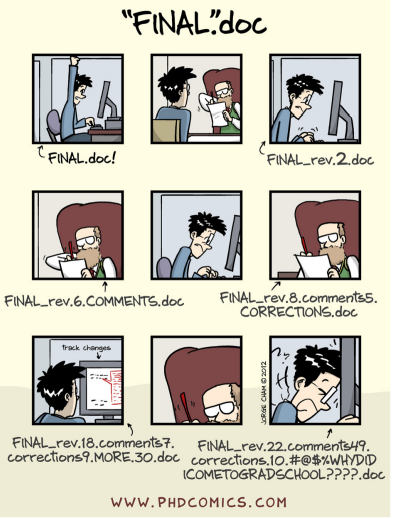
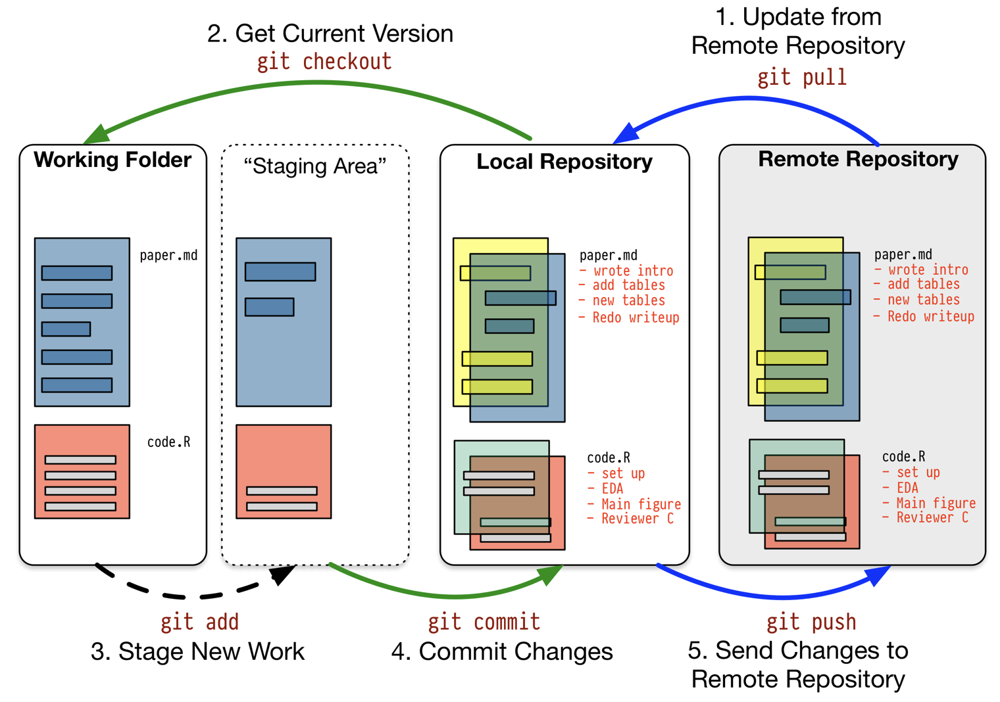
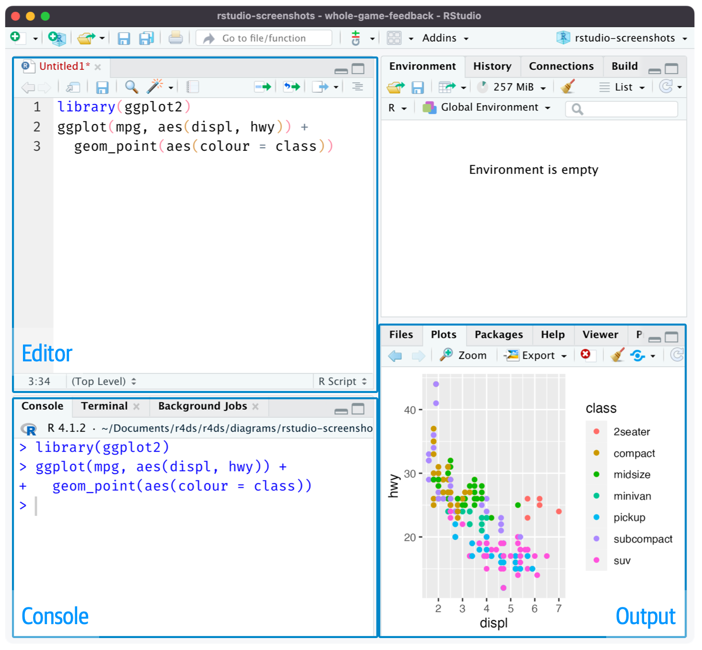
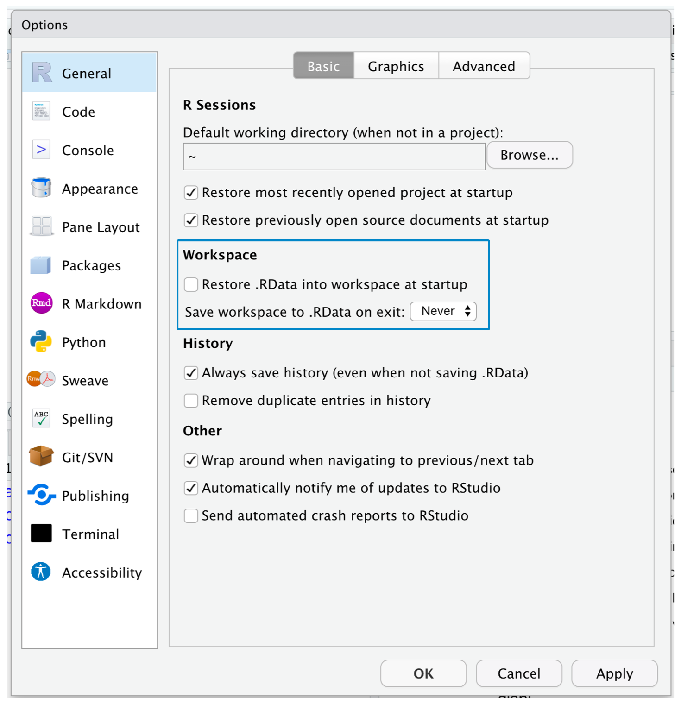
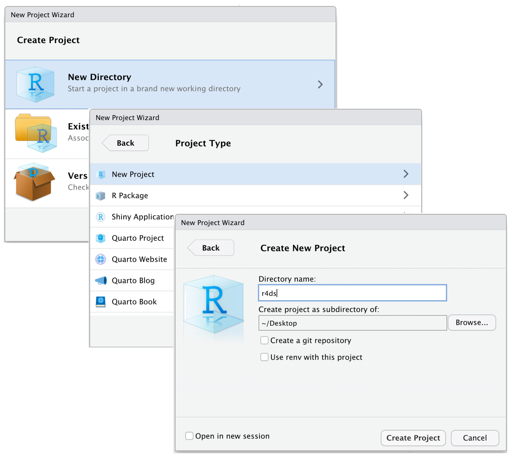

🗓️ Week 02
Computational Thinking and Reproducibility
Reproducibility
Data Sharing
- Data sharing serves at least two distinct scientific purposes: 1) evaluative and 2) generative
- The evaluative purpose of sharing data is to increase the credibility of findings by allowing the evidence to be directly verified and interrogated by others
- The generative purpose is to enable other investigators to pursue new questions and thereby maximise the total potential research contribution of data
Why are Data-sharing Policies Necessary?
The code presents data sharing as a matter of norms: researchers have an ethical obligation to allow colleagues to verify results and, if possible, to make their dataset broadly available after they have finished with it
In 2006, a group of Dutch psychologists sought to obtain data for all empirical studies published in two issues of four major psychology journals
- They were successful only 27 percent of the time (Wicherts et al. 2006). Additionally, the studies for which authors did not share data were more likely to report weaker evidence and contain simple reporting errors
Private Data
Data are confidential when researchers have information about the identity of participants but agree to keep identities private
Data are anonymous when researchers themselves do not know respondents’ identities
Anonymizing Data
Direct identifiers are variables that obviously identify individuals, including names, email addresses, and social security numbers. Of course, these must be removed in order for the resulting dataset to be anonymous. But just because direct identifiers have been removed does not mean the data are truly anonymous
For instance, Netflix once sponsored a contest in which data scientists were given information about how users had rated some films and asked to predict how those users would rate others. The dataset included only seemingly minimal information: a random ID number for individuals, the film, the date of the rating, and the number of stars given. Narayanan and Shmatikov (2008) demonstrated that one could use correspondences in the dates of reviews between the Netflix data and the IMDB site to match some IDs in the Netflix data to IMDB usernames, and some IMDB usernames could then be easily connected to people’s real identities
Making Your Data and Coding Available
Researchers have often made data public by simply posting a file on their personal websites, but this is far from best practice nowadays. Personal websites come and go, whereas data archivists’ jobs require them to think in terms of posterity
A clear and thoughtful description of what should go in a data replication package, for instance, has been provided by the American Journal of Political Science (AJPS; Jacoby and Lupton 2016). Their guidelines break the work of assembling a replication package into four components: README file; analysis datasets; software commands; and information to reconstruct analysis dataset
README File
The README file walks the others through the contents of the replication package and how they relate to the contents of the project. We think this is most effectively organised by presenting the data files to be used first, and then referring to each table, figure, or result in the paper and indicating the command file (or header within a larger command file) used to generate each one
A README is often the first item a visitor will see when visiting your repository. README files typically include information on:
- What the project does
- How users can get started with the project
- Where users can get help with your project
- Who maintains and contributes to the project
About READMEs
You can add a README file to a repository to communicate important information about your project. A README, along with a repository license, citation file, contribution guidelines, and a code of conduct, communicates expectations for your project and helps you manage contributions
For more information about providing guidelines for your project, see “Adding a code of conduct to your project” and “Setting up your project for healthy contributions”
If a repository contains more than one README file, then the file shown is chosen from locations in the following order: the .github directory, then the repository’s root directory, and finally the docs directory
Computational Thinking
Why we need computational thinking
- If social scientists want to work efficiently, they should make the most of modern programming languages, which excel at automating tasks
- Consider a UCL student or researcher who wishes to streamline their work. Instead of manually gathering and managing data, they could opt to create a reproducible workflow that automatically collects, parses, and organises the information into interconnected databases. This approach also involves the responsibility of maintaining and ensuring the data’s quality. However, it offers the advantage of reducing data collection costs significantly, greatly enhancing the potential for reproducibility and scalability in their research endeavors. Additionally, they can choose to document their code and share it publicly through their GitHub repository or even package essential functions as open-source libraries for wider accessibility and collaboration
- Social scientists don’t need to become software engineers. Programming is a tool, not a goal. Consider automating parts of social science research using programming as a means to that end
Project Workflow
Version Control

- This helps to track the following information:
- Which changes were made?
- Who made the changes?
- When were the changes made?
- Why were changes needed?
A Schematic Git Workflow

Workflow: Scripts and Projects
- Give yourself more room to work, use the script editor. Open it up by clicking the File menu, selecting New File, then R script, or using the keyboard shortcut Cmd/Ctrl + Shift + N

Recommendations
Start your script with the packages you need. That way, if you share your code with others, they can easily see which packages they need to install
Note that you should never include
install.packages()in a script you shareIf you have multiple packages to install, then please consider using the
pacmanpackage
install.packages("pacman")
pacman::p_load(
ggplot2,
dplyr,
usethis)- Make your R scripts reproducible by replacing
library(pkg)withgroundhog.library(pkg,date)groundhog.library()loads packages & their dependencies as available on chosen date on CRAN
install.packages("groundhog")
library("groundhog")
pkgs <- c("rio","metafor")
groundhog.library(pkgs, "2021-09-01")Computational Reproducilibility
Computational reproduciblity = code + data + environment + distribution
Roger Peng’s checklist
- Start with science (avoid vague questions and concepts)
- Don’t do things by hand (not only about automation but also documentation)
- Don’t point and click (same problem)
- Teach a computer (automation also solves documentation to some extent)
- Use some version control
- Don’t save output (instead, keep the input and code)
- Set your seed
- Think about the entire pipeline
Saving and naming
File names should be machine readable: avoid spaces, symbols, and special characters. Don’t rely on case sensitivity to distinguish files
File names should be human readable: use file names to describe what’s in the file
File names should play well with default ordering: start file names with numbers so that alphabetical sorting puts them in the order they get used
01-load-data.R
02-exploratory-analysis.R
03-model-approach-1.R
04-model-approach-2.R
fig-01.png
fig-02.png
report-2022-03-20.qmd
report-2022-04-02.qmd
report-draft-notes.txtHow to Organise Files in a Project
Step 1: Environment is part of your project. If someone cannot reproduce your environment, they won’t be able to run your code
Step 2: For each project, create a project directory named after the project
- data: raw, processed (all processed, cleaned, and tided)
- figures
- reports (PDF, HTML, TEX, etc.,)
- results (model outcomes, etc.,)
- scripts (i.e., functions)
- .gitignore (for Git)
- name_of_project.Rproj (for R)
- README.md (for Git)
Step 3: Launch R Studio. Choose File > New project > Browse existing directories > Create project. This allows each project has its workspace
Projects
- To help keep your R scripts as the source of truth for your analysis, we highly recommend that you instruct RStudio not to preserve your workspace between sessions

RStudio Projects
- Keeping all the files associated with a given project (input data, R scripts, analytical results, and figures) together in one directory is such a wise and common practice that RStudio has built-in support for this via projects

Connecting Your Projects to GitHub
First create a repo on GitHub
Cloning
Working on local repo and commit your changes
Tracking files
Undoing mistakes
Imagine you did some work, committed the changes, and pushed them to the remote repo. But you’d like to undo those changes
Say you added some plain text by mistake to README.md. Running
git revertwill do the opposite of what you just did (i.e., remove the plain text) and create a new commit. You can thengit pushthis to the remote.
git revert [commit id]
git push